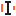
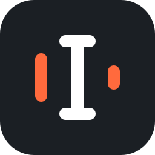
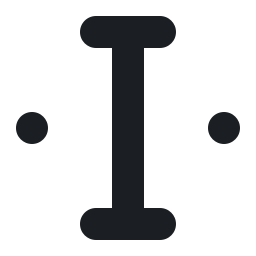
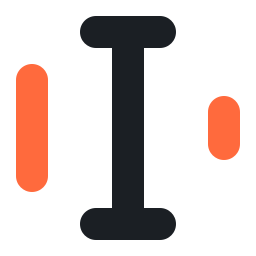
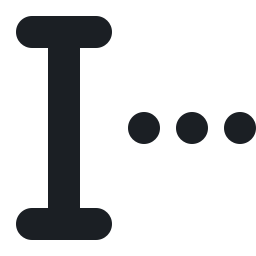
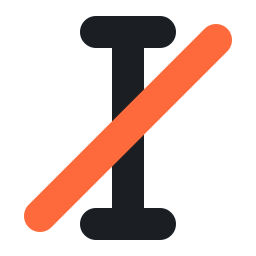

Jede Zeile zeigt einen Zustand in den vier Tray Größen (100, 125, 150, 200 Prozent). Die Größen 20 und 24 sind hier nur hochgerechnet und werden für die fertigen Dateien eigens auf ganze Pixel gesetzt.
| 16 | 20 | 24 | 32 | |
|---|---|---|---|---|
| Ruhe | ||||
| Aufnahme | ||||
| Verarbeitung | ||||
| Fehler |
| 16 | 20 | 24 | 32 | |
|---|---|---|---|---|
| Ruhe | ||||
| Aufnahme |  | |||
| Verarbeitung | ||||
| Fehler |
| Ruhe | Aufnahme | Verarbeitung | Fehler |
|---|---|---|---|




